Memory Hierachy¶
对应教材AppC, Ch2
Introduction¶
Memory¶
内存层次：
- Register
- Cache
- Memory
- Storage
存储技术：
- Mechanical Memory
- Electronic Memory
- SRAM - 静态随机访存，经常用来做cache
- DRAM - 动态随机访存，经常用来做memory，有写回刷新操作
- SDRAM
- DDR
- GDRAM
- GDDR
- HBM
- EPPROM
- NAND
- NOR
- Optical Memory
个人移动设备可能只有L1L2的Cache，desktop会有L1L2L3的Cache，而server会对硬盘storage可靠性要求更高（很重要的数据有不止一两份备份）：

Cache Concept¶
由于cache直接和cpu沟通（忽略reg离cpu最近的一层），所以cache读取的优化直接关联到cpu的优化。
Cache: a safe place for hiding or storing things. （之前因为临时存放，位置不确定所以无人在意；现在也不安全，attacker可以通过访问cache的时间差知道访问了什么数据）
-
Cache Hit/Miss: When the processor can/cannot find a requested data item in the cache
Cache Miss 会带来额外的开销：由 Latency, Bandwith 决定。优化过程中要尽可能提升hit的几率、降低cache miss的开销。
-
Cache Block/Line: A fixed-size collection of data containing the requested word, retrieved from the main memory and placed into the cache. cpu访问cache的单位就是block。cache块取多大合适也是设计cache的一大问题。
-
Cache Locality:
-
Temporal locality - 时间局部性: need the requested word again soon
访问过这个数据，之后很可能再次访问这个数据。
-
Spatial locality - 空间局部性: likely need other data in the block soon
访问了这个位置，之后很可能访问下一个位置。
-
36 terms of Cache

Four Questions for Cache Designers¶
对memory性能优化的目标：平衡容量、耗时和价格，离cpu越近，耗时少、容量小，价格贵。
这部分内容可见计组笔记
Caching is a general concept used in processors, operating systems, file systems, and applications.
- Q1: Where can a block be placed in the upper level/main memory? (Block placement)
- Fully Associative, Set Associative, Direct Mapped
- Q2: How is a block found if it is in the upper level/main memory? (Block identification)
- Tag/Block
- Q3: Which block should be replaced on a Cache/main memory miss? (Block replacement)
- Random, LRU, FIFO
- Q4: What happens on a write? (Write strategy)
- Write Back or Write Through (with Write Buffer)
Q1: Block Placement¶
-
Direct mapped
一个块在 cache 中有一个固定的位置（通常通过取模得到）。
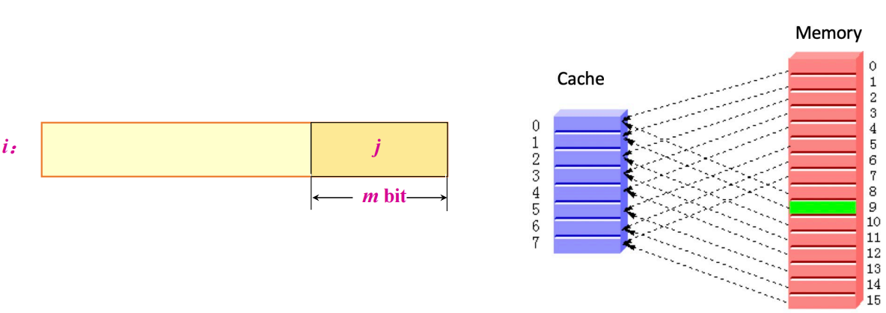
-
Fully associative
块可以放在 cache 里的任意位置。（不好找）
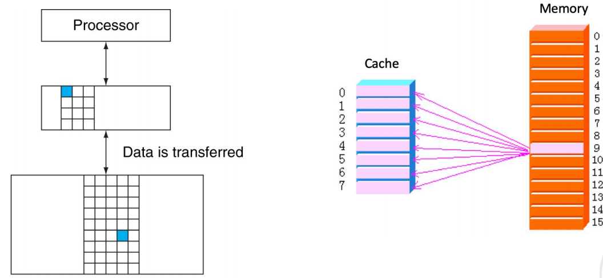
-
Set associative
- 块可以在一个组里的任何位置，组里可以放若干个块。
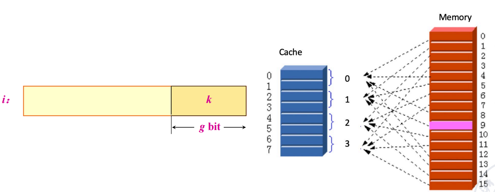
- 直接映射相当于一路组相联，全相联相当于 n 路组相联（n 是 cache 的块数）。
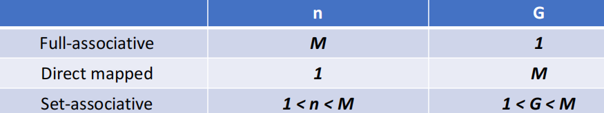
一般情况，\(n\leq 4\)
Q2: Block Identification¶

Q3: Block Replacement¶
- Random replacement - randomly pick any block
-
Least-Recently Used (LRU) - pick the block in the set which was least recently accessed 最近最少使用 - 时间局部性原理 需要额外的位数来记录访问的时间。一般我们用的是近似的 LRU。
-
First In, First Out (FIFO) - Choose a block from the set which was first came into the cache
Strategy of Block Replacement
Suppose:
-
Cache block size is 3, and access sequence is shown as follows.
2, 3, 2, 1, 5, 2, 4, 5, 3, 4
-
FIFO, LRU and OPT are used to simulate the use and replacement of cache block. （OPT 是一种理想情况，用来衡量算法性能，从未来访问的角度决定替换策略）
-
FIFO

-
LRU

-
OPT，标识当前最远的会被用上的

-
不同的替换算法会影响命中率。
Hit rate is related to the replacement algorithm, the access sequence, the cache block size. * 特殊的访问序列：例如thrashing - 一直无法hit，每次都把下一次要访问的替换出去。
- block size:
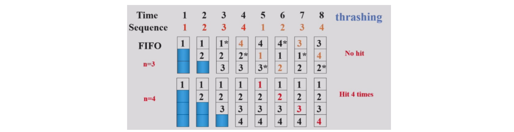
Stack replacement algorithm¶
有些算法随着 N 增大命中率非下降（当n变大的时候，n大的集合一定包含n小的集合），有些算法随着 N 增大命中率反而会下降。
我们把随着 N 增大命中率非下降的算法称为 stack replacement algorithm：
\(B_t(n)\) represents the set of access sequences contained in a cache block of size \(n\) at time \(t\).
- \(B_t(n)\) is the subset of \(B_t(n+1)\).
LRU replacement algorithm is a stack replacement algorithm, while FIFO is not.
FIFO - Belady现象：
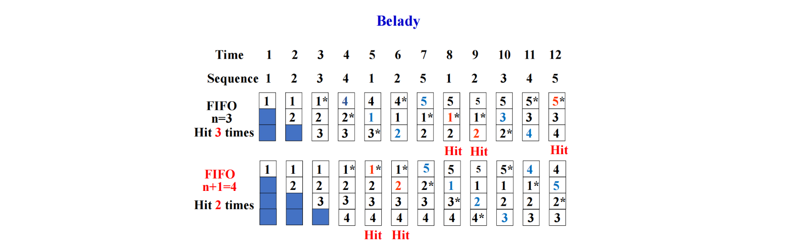
For LRU algorithm, the hit ratio always increases with the increase of cache block.
Using LRU
用栈来模拟 LRU，栈顶是最近访问的，栈底是最久未访问的，每次要替换的时候，替换栈底的元素。通过下面的图可以快速看到栈大小为 n 时的命中率。

LRU Implementation - Comparison Pair Method¶
如何只通过门和触发器来实现 LRU 算法？—— Comparison Pair Method
-
Basic idea
Let each cache block be combined in pairs, use a comparison pair flip-flop to record the order in which the two cache blocks have been accessed in the comparison pair, and then use a gate circuit to combine the state of each comparison pair flip-flop, you can find the block to be replaced according to the LRU algorithm.
让任何两个 cache 块之间两两结对，用一个触发器的状态来代表这两个块的先后访问顺序（比如 1 表示 A 刚被访问，0 表示 B 刚被访问）。通过门电路对触发器的状态进行逻辑组合，找到最久未被访问的块。
Comparison Pair Method
这里有 3 个 cache blocks A, B, C。那么我们需要 3 个触发器来记录之间的状态。假设 \(T_{AB}=1\) 表示 A 被更近访问，\(T_{AC}, T_{BC}\) 同理。


-
Hardware usage analysis
假设有 p 个 cache blocks, 我们需要 \(C_p^2=p\cdot (p-1)/2\) 个触发器。
当 \(p\) 超过 8 时，需要的触发器过多，这个算法就不适用了。所以比较对法有一定的局限性。
Q4: Write Strategy¶
-
Write Hit
-
Write Through：直接写回到内存。
写到内存的时间较长，这个过程需要 Write Stall，或者使用 Write Buffer（节省stall的时间）。

-
Write Back：只在 Cache 中写，不写入memory，同时通过一个额外的 dirty bit 表示这个块已经被修改。
-
-
Write Miss
- Write Allocate：将要写的块先读到 Cache 中，再写。
- Write Around(no-write allocate)：直接写到内存。
- In general, write-back caches use write-allocate , and write-through caches use write-around.
Example

write allocate可以降低miss的rate。
Memory System Performance¶
这部分也可见计组笔记


How to improve
- Reduce the miss penalty
- Reduce the miss rate
- Reduce the time to hit in the cache
- Reduce the miss penalty and miss rate via parallelism
例子：


Virtual Memory¶
物理内存有限，虚拟内存让用户体验到一个抽象的更大的（在一个进程内看上去是连续的）内存。
-
Why virtual memory?
可以让进程使用不连续的物理内存空间（虚拟地址上是连续的）；更好地隔离不同进程。
-
virtual-physical address translation
- memory protection/sharing among multi-program
Virtual Memory = Main Memory + Secondary Storage(Disk memory reference，为进程的内存提供了更大的空间)
-
Virtual Memory Allocation
-
Paged virtual memory
page: fixed-size block
-
Segmented virtual memory
segment: variable-size block

-
Paging vs Segmentation

分页式的易于实现，方便替换。现在常用段页式结合，或者纯页式。
How virtual memory works?¶
Cache 的四个问题在虚拟内存中都有对应。
-
Q1. Where can a block be placed in main memory?
缺失代价很高，因此我们采用全相联的方式，以降低 miss rate。
-
Q2. How is a block found if it is in main memory?
虚拟地址分两部分，偏移量和页号。页号是页表的索引。

-
Q3. Which block should be replaced on a virtual memory miss?
Least Recently Used (LRU) block, with use/reference bit.
-
Q4. What happens on a write?
Write-back strategy(往disk里面写开销太大), with dirty bit. 在不得不写回disk的时候再写回。
Page Table¶
-
Page tables are often large - 存在main memory里面
e.g. 32-bit virtual address, 4KB pages, 4 bytes per page table entry.
page table size: \((2^{32}/2^{12}) \times 2^2 = 2^{22}\) bytes = \(4\) MB -
Logically two memory accesses for data access:
- one to obtain the physical address from page table;
- one to get the data from the physical address;
正常来说页表需要两次内存访问，访问效率低下，因此我们需要 cache page table，即 TLB。
Translation lookaside buffer (TLB)
- tag: portions of the virtual address (VPN);
- data: a physical page frame number (PPN), protection field, valid bit, use bit, dirty bit;
Example
发送 tag (VPN) 尝试匹配，并看访问类型是否违规。如果匹配成功，就把对应的 PPN 送到 Mux，将偏移量加上 PPN 得到物理地址。


Page Size Selection¶
-
Pros of larger page size
-
Smaller page table, less memory (or other resources used for the memory map);
页更少，所以页表更小。
-
Larger cache with fast cache hit;
页更大，所以 cache 命中的时间更短（因为我们需要遍历的页更少）。
-
Transferring larger pages to or from secondary storage is more efficient than transferring smaller pages;
一次搬运更多的数据，所以更高效，小页可能需要搬运多次。
-
Map more memory, reduce the number of TLB misses;
TLB miss 次数更少。
-
-
Pros of smaller page size
-
Conserve storage
When a contiguous region of virtual memory is not equal in size to a multiple of the page size, a small page size results in less wasted storage.
减少对内存的使用，内部碎片更少。
-
Use both: multiple page sizes
Address Translation

L1 cache找指令，L2 cache找数据
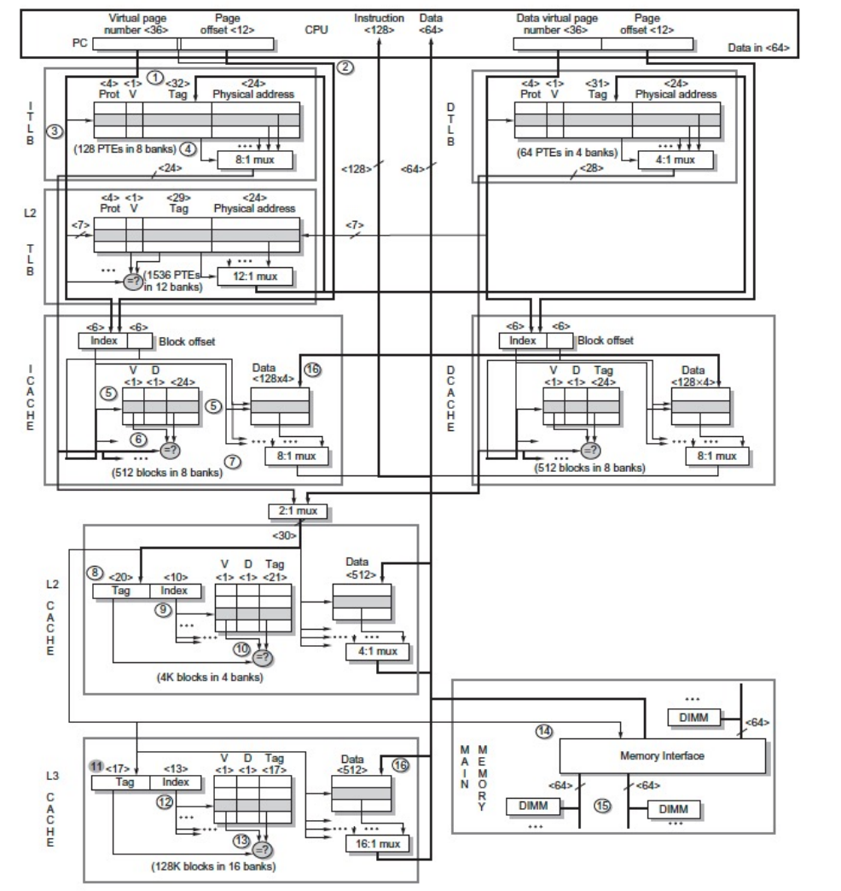
Intel Core i7 6700 - 在TLB的时候就分离了I/D TLB
Safety - 由操作系统保护¶
每个进程有自己的page table，独立的，由每个进程自己管理；同时负责权限的管理； 权限层级 - 更高级别的处理器对进程的管理有更高的权限； keys and locks;
Summary¶
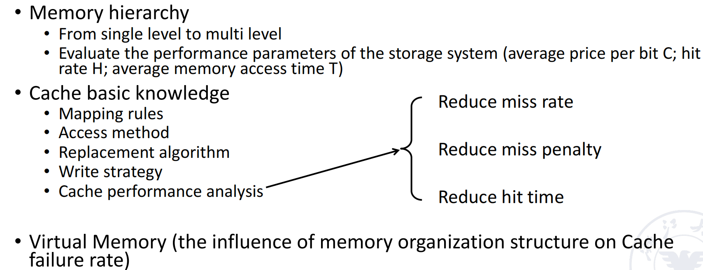
附：
MESI协议（Modified, Exclusive, Shared, Invalid）是一种常见的缓存一致性协议，用于多处理器系统中管理缓存数据的一致性。它通过为每个缓存块分配一个状态，确保多个处理器在访问共享内存时能够保持一致性。MESI协议的四种状态分别是：
- Modified（已修改）：
- 缓存块已被当前处理器修改，且与主存中的数据不一致。
- 此时，缓存块是“脏”的，只有当前处理器拥有该数据的最新副本。
- 如果该缓存块被替换，需要将数据写回主存。
- Exclusive（独占）：
- 缓存块只存在于当前处理器的缓存中，且与主存中的数据一致。
- 当前处理器可以自由读取或写入该缓存块，而无需通知其他处理器。
- Shared（共享）：
- 缓存块可能存在于多个处理器的缓存中，且与主存中的数据一致。
- 所有处理器只能读取该缓存块，不能直接写入。如果需要写入，必须先将其他处理器的缓存块置为无效。
- Invalid（无效）：
- 缓存块无效，不能被当前处理器使用。
- 如果处理器需要访问该数据，必须从主存或其他处理器的缓存中重新加载。
安全专题：Cache侧信道攻击¶
- Meltdown：利用乱序执行技术，通过对内存的响应时间差来建立一个侧信道攻击，破坏了位于用户和操作系统之间的基本隔离。
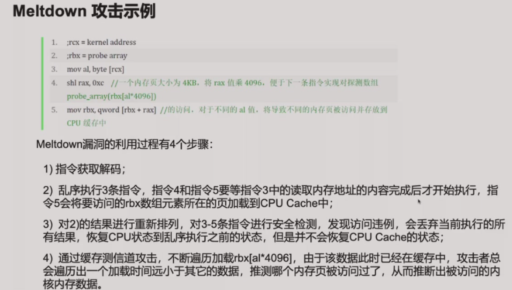
缓解措施：
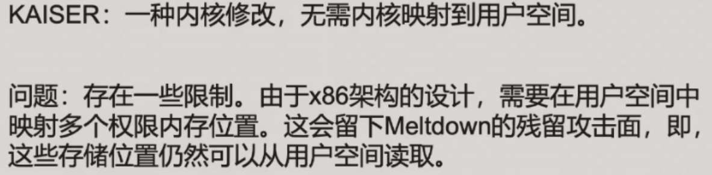
- Spectre：预测执行对CPU缓存的影响会被保留，即使预测错误恢复的也是CPU状态而非cache状态。
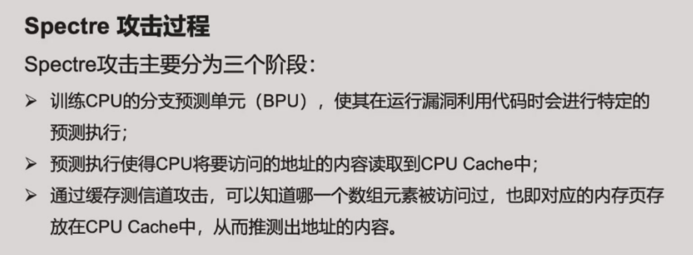
缓解措施（都是以牺牲性能为代价的）：
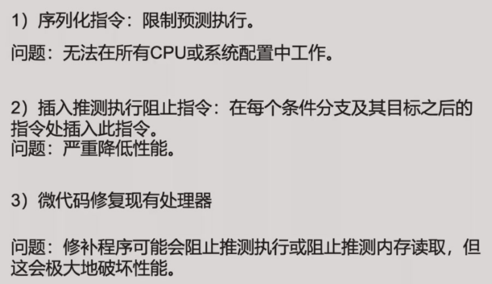